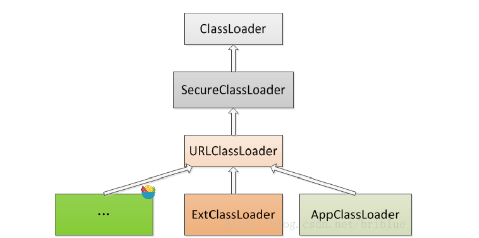

ClassLoader
实习的过程中发现对安卓系统的基础认知不足，补一补
首先从Java的ClassLoader开始了解
Java ClassLoader
基本解析
Java语言首先会被编译成Class文件，在运行时再将编译后的class文件加载jvm虚拟机中去，而ClassLoader类就是完成这个工作
Java语言系统自带有三个类加载器:
Bootstrap ClassLoader
最顶层的加载类，主要加载核心类库，%JRE_HOME%.jar、resources.jar、charsets.jar和class等。另外需要注意的是可以通过启动jvm时指定-Xbootclasspath和路径来改变Bootstrap
ClassLoader的加载目录。比如java -Xbootclasspath/a:path被指定的文件追加到默认的bootstrap路径中。我们可以打开我的电脑，在上面的目录下查看，看看这些jar包是不是存在于这个目录。Extention ClassLoader
扩展的类加载器，加载目录%JRE_HOME%。还可以加载-D java.ext.dirs选项指定的目录。Appclass Loader也称为SystemAppClass
加载当前应用的classpath的所有类。
具体的加载顺序时：
Bootstrap CLassloder
Extention ClassLoader
AppClassLoader
每个加载器都会有相应的父加载器，可以通过以下方式获取
1 2 3 4 ClassLoader cl = Test.class.getClassLoader();"ClassLoader is:" +cl.toString());"ClassLoader\'s parent is:" +cl.getParent().toString());
而父类并不就是父加载器，以下为ClassLoader的继承关系，getParent()的实现再ClassLoader.java中

1 2 3 4 5 6 7 8 9 10 11 12 13 14 15 16 17 18 19 20 21 22 23 24 25 26 27 28 29 30 31 32 33 34 35 36 37 38 39 40 41 42 43 44 45 46 47 48 49 50 51 52 53 54 55 56 57 58 59 60 61 62 63 64 public abstract class ClassLoader {private final ClassLoader parent;private static ClassLoader scl;private ClassLoader (Void unused, ClassLoader parent) {this .parent = parent;protected ClassLoader (ClassLoader parent) {this (checkCreateClassLoader(), parent);protected ClassLoader () {this (checkCreateClassLoader(), getSystemClassLoader());public final ClassLoader getParent () {if (parent == null )return null ;return parent;public static ClassLoader getSystemClassLoader () {if (scl == null ) {return null ;return scl;private static synchronized void initSystemClassLoader () {if (!sclSet) {if (scl != null )throw new IllegalStateException ("recursive invocation" );Launcher l = sun.misc.Launcher.getLauncher();if (l != null ) {Throwable oops = null ;try {new SystemClassLoaderAction (scl));catch (PrivilegedActionException pae) {if (oops instanceof InvocationTargetException) {if (oops != null ) {if (oops instanceof Error) {throw (Error) oops;else {throw new Error (oops);true ;
根据以上源码可以得知，getParent()便会获取一个ClassLoader对象parent，而其复制再ClassLoader的构造方法中：
一、由外部类创建ClassLoader时直接指定一个ClassLoader为parent。
二、由getSystemClassLoader()方法生成，也就是在sun.misc.Laucher通过getClassLoader()获取，而其返回结果就是APPClassloader，可知一个ClassLoader创建时如果没有指定parent，那么它的parent默认就是AppClassLoader
而ExtClassLoader与AppClassLoader的parent又分别是什么呢，以下为Launcher的部分源码
1 2 3 4 5 6 7 8 9 10 11 12 13 14 15 16 17 18 19 20 21 22 23 24 25 26 27 28 29 30 31 32 33 34 35 36 37 38 39 40 41 42 43 44 45 46 47 48 49 50 51 52 53 54 55 56 57 58 59 60 61 62 63 64 65 66 67 68 69 70 71 public class Launcher {static URLStreamHandlerFactory factory = new Factory ();static Launcher launcher = new Launcher ();static String bootClassPath =System .getProperty ("sun.boot.class.path" );static Launcher getLauncher (return launcher;ClassLoader loader;Launcher () {ClassLoader extcl;try {ExtClassLoader .getExtClassLoader ();catch (IOException e) {throw new InternalError ("Could not create extension class loader" , e);try {AppClassLoader .getAppClassLoader (extcl);catch (IOException e) {throw new InternalError ("Could not create application class loader" , e);ClassLoader getClassLoader (return loader;static class ExtClassLoader extends URLClassLoader {static ExtClassLoader getExtClassLoader () throws IOException File [] dirs = getExtDirs ();try {return AccessController .doPrivileged (new PrivilegedExceptionAction <ExtClassLoader >() {ExtClassLoader run () throws IOException {return new ExtClassLoader (dirs);catch (java.security .PrivilegedActionException e) {throw (IOException ) e.getException ();ExtClassLoader (File [] dirs) throws IOException {super (getExtURLs (dirs), null , factory);
其中
1 2 3 4 5 ClassLoader extcl;ExtClassLoader .getExtClassLoader ();AppClassLoader .getAppClassLoader (extcl);
可以看到AppClassLoader的parent是一个ExtClassLoader实例。
而ExtClassLoader并没有直接找到对parent的赋值，它调用了它的父类也就是URLClassLoder的构造方法并传递了3个参数。
1 2 3 public ExtClassLoader (File [] dirs) throws IOException {super (getExtURLs (dirs), null , factory);
对应的代码
1 2 3 4 public URLClassLoader (URL [] urls, ClassLoader parent,URLStreamHandlerFactory factory) {super (parent);
可以看到，ExtClassLoader的parent为null
这是啥情况捏，这是由于Bootstrap
ClassLoader是由C/C++编写的，并不是JAVA类，JVM启动时需要加载的系统类都是通过它加载的，而ExtClassLoader的父类可以视作是他
双亲委托
当 AppClassLoader
收到类加载的请求时，它首先检查自己是否已经加载了该类，如果已经加载了，就直接返回该类的
Class 实例。否则，它会将加载请求委托给父加载器
ExtClassLoader。
ExtClassLoader
同样会检查其缓存，如果没有加载过该类，它会继续委托给
Bootstrap ClassLoader。Bootstrap ClassLoader 会在 Java
的核心库中查找和加载类。如果 Bootstrap ClassLoader 未找到该类，请求会回退到
ExtClassLoader，ExtClassLoader 会在 JRE
的扩展库中查找和加载类。
如果 ExtClassLoader 也未找到，请求会回退到
AppClassLoader，它会在应用的类路径中查找和加载类。
如果所有的父加载器都未能加载该类，AppClassLoader
会尝试自己加载该类。
如果 AppClassLoader
也未能加载该类，并且没有其他的子类加载器可以尝试，那么会抛出
ClassNotFoundException 异常。
1 2 3 4 5 6 7 8 9 10 11 12 13 14 15 16 17 18 19 20 21 22 AppClassLoader (应用程序类加载器)
即遵循向上委托，向下查找的一个流程
重要方法
loadClass()
方法原型
1 2 3 protected Class<?> loadClass(String name,boolean resolve)throws ClassNotFoundException
源码如下：
1 2 3 4 5 6 7 8 9 10 11 12 13 14 15 16 17 18 19 20 21 22 23 24 25 26 27 28 29 30 31 32 33 34 35 36 37 38 39 40 41 protected Class<?> loadClass(String name, boolean resolve)throws ClassNotFoundExceptionsynchronized (getClassLoadingLock(name)) {if (c == null ) {long t0 = System.nanoTime();try {if (parent != null ) {false );else {catch (ClassNotFoundException e) {if (c == null ) {long t1 = System.nanoTime();if (resolve) {return c;
源码就很好的体现了双亲委托
ps：若重写一个classLoader的子类，建议覆盖findClass()方法，而不是直接改写loadClass()
如果你重写了 loadClass 而不是
findClass，你将需要自己处理整个加载过程，包括双亲委派模型。
自定义ClassLoader
编写一个类继承自ClassLoader抽象类。
复写它的findClass()方法。
在findClass()方法中调用defineClass()。
例子：
1 2 3 4 5 6 7 8 9 10 11 12 13 14 15 16 17 18 19 20 21 22 23 24 25 26 27 28 29 30 31 32 33 34 35 36 37 38 39 40 41 42 public class DiskClassLoader extends ClassLoader {private String mLibPath;public DiskClassLoader (String path) {this .mLibPath = path;@Override protected Class<?> findClass(String name) throws ClassNotFoundException {String fileName = getFileName(name);File file = new File (mLibPath, fileName);try {FileInputStream is = new FileInputStream (file);ByteArrayOutputStream bos = new ByteArrayOutputStream ();int len = 0 ;while ((len = is.read()) != -1 ) {byte [] data = bos.toByteArray();return defineClass(name, data, 0 , data.length);catch (IOException e) {return super .findClass(name);private String getFileName (String name) {int index = name.lastIndexOf('.' );if (index == -1 ) { return name + ".class" ;else {return name.substring(index + 1 ) + ".class" ;
Android ClassLoader
相较于JAVA,Android的ClassLoader加载的是dex文件，分为系统类加载器和自定义加载器
系统类加载器：BootClassLoader 、PathClassLoader
和 DexClassLoader 。
BootClassLoader
用途： 加载 Android 系统框架层的类。特点： 是一个内部单例类，Java 层无法直接访问。访问限制： 仅在系统框架内部使用。
PathClassLoader
用途： 加载 Android 应用程序的类。特点： 主要用于加载已安装应用的 dex 文件，通常是
/data/app 目录下的 classes.dex。构造方法： 接受 dex 路径和父类加载器作为参数。
1 2 3 4 5 6 7 8 9 10 11 12 13 14 15 public class PathClassLoader extends BaseDexClassLoader {public PathClassLoader (String dexPath, ClassLoader parent) {super (dexPath, null , null , parent);public PathClassLoader (String dexPath, String librarySearchPath, ClassLoader parent) {super (dexPath, null , librarySearchPath, parent);
DexClassLoader
用途： 与 PathClassLoader
相似，但提供更多的灵活性。特点： 可以加载 apk、jar、zip 文件中的
classes.dex，也可以加载应用程序路径之外的 dex 文件。构造方法：
需要额外提供一个优化目录（optimizedDirectory），用于存放优化后的
dex 文件。
1 2 3 4 5 6 7 8 9 10 11 12 public class DexClassLoader extends BaseDexClassLoader {public DexClassLoader (String dexPath, String optimizedDirectory, String librarySearchPath, ClassLoader parent) {super (dexPath, new File (optimizedDirectory), librarySearchPath, parent);
DexClassLoader
和 PathClassLoader区别处理优化目录
DexClassLoader 和 PathClassLoader 都继承自
BaseDexClassLoader，它们的主要区别在于处理优化目录的方式不同。DexClassLoader
允许指定优化目录，而 PathClassLoader 的构造方法中优化目录是
null。
在 Android 中，ClassLoader 用于加载 .dex
文件，这些文件包含应用程序的编译代码。不同版本的 Android 系统对
.dex 文件的处理方式有所不同，特别是与
optimizedDirectory 参数相关的处理方式。
Dalvik Runtime (Android 5.0
以下)
optimizedDirectory 参数
在 Android 5.0 之前，Dalvik 运行时环境使用
optimizedDirectory 参数来指定优化后的 .dex
文件（即 .odex 文件）存放的目录。默认情况下，这个目录是
/data/dalvik-cache。
dexopt 过程
当 Dalvik 虚拟机加载 .dex 文件时，它会执行
dexopt 过程，该过程包括验证和优化 .dex
文件。
优化包括预编译和指令集转换，生成 .odex
文件，这些文件针对特定的硬件和虚拟机实例进行了优化。
由于应用程序没有写权限到
/data/dalvik-cache，PathClassLoader
只能加载已经安装的 APK 中的 .dex 文件。
ART Runtime (Android 5.0
及以上)
dex2oat 过程
从 Android 5.0 开始，ART 替代了 Dalvik 作为 Android
的默认运行时，引入了 Ahead-Of-Time (AOT) 编译过程，称为
dex2oat。
在安装应用时，dex2oat 会将 .dex 文件编译成
.oat
文件，这个过程在设备上进行，针对设备的架构进行优化。
如果在运行时无法加载 .oat 文件，系统将回退到
.dex 文件，但这样会失去 AOT 的性能优势。
变化
在 ART 下，PathClassLoader 和
DexClassLoader 都可以加载任意指定的 .dex
文件，以及包含在 jar、zip、apk 中的 classes.dex 文件。
Android 8.1 更新
统一化的 ClassLoader 行为
到了 Android 8.1，DexClassLoader 的
optimizedDirectory 参数也会被设置为 null，因此
PathClassLoader 和 DexClassLoader
的行为一致了。
这意味着两者没有明显区别，它们都能加载任意的 .dex
文件，Android 系统会负责任何必要的优化过程。
区别二
往往PathClassLoader都是去获取系统或应用的ClassLoader以访问相关资源，而DexClassLoader则用于去加载外部的dex
context.getClassLoader()
当您调用 context.getClassLoader() 时，您通常得到的是一个
PathClassLoader 实例。这个类加载器是 Android
应用上下文（Context）的一部分，用于加载应用内的类。每个
Android 应用在运行时都会有一个 PathClassLoader
实例，它负责加载 APK 文件中的类。
用途 ：加载当前应用 APK 中包含的类。特点
与应用绑定，加载应用自身的 classes.dex 文件中的类。
通常情况下，应用中的所有第三方库和应用代码都是通过这个类加载器加载的。
ClassLoader.getSystemClassLoader()
此方法通常返回系统类加载器，它是 Java 系统的一部分，通常用于加载 Java
核心库。
用途 ：加载 Java 系统类库，即从系统的 CLASSPATH
环境变量所指定的路径加载类。特点
与整个系统环境绑定，不特定于任何应用。
加载标准的 Java API 类和 Android 框架类。
不用于加载任何从 APK 文件中包含的类。
DexClassLoader
1 2 DexClassLoader dexClassLoader = new DexClassLoader (dexPath, optimizedDirectory, librarySearchPath, parentClassLoader);
举例
1 2 3 4 5 6 ClassLoader systemClassLoader = ClassLoader.getSystemClassLoader();DexClassLoader dexClassLoader = new DexClassLoader (dexPath, optimizedDirectory, librarySearchPath, systemClassLoader);DexClassLoader dexClassLoader = new DexClassLoader (externalDexPath, optimizedDirectory, librarySearchPath, context.getClassLoader());
基本的继承关系如下：
1 2 3 4 5 java.lang.Object
完整参考图如下
image-20240121140943034
InMemoryClassLoader
InMemoryDexClassLoader
是API26新增的类加载器，用于从内存中加载 DEX（Dalvik
Executable）文件。这个类加载器允许应用程序从字节数组中直接加载 DEX
文件而不需要从文件系统中加载，这在某些特定的场景中非常有用，比如当你的应用需要执行动态生成的代码或者需要热修复时。
应用场景
以下是一些可能会使用 InMemoryDexClassLoader 的场景：
动态代码执行 ：应用可能会在运行时生成或下载新的代码，希望能够立即执行这些代码而不需要重启。热修复 ：如果需要修复线上的某个紧急问题，可以通过热修复的方式，动态地替换掉有问题的类。插件化 ：为了支持插件化，可以动态地加载和卸载插件。
基本用法
在使用 InMemoryDexClassLoader 之前，需要确保你有一个 DEX
文件的字节表示。你可能得到这个字节流是通过动态编译，网络下载，或者其他应用提供的接口等方式。
下面是一个简单的使用 InMemoryDexClassLoader
加载类的示例：
1 2 3 4 5 6 7 8 9 10 11 12 13 14 15 16 17 18 19 20 21 22 23 24 25 26 27 28 29 30 byte [] dexBytes; ByteBuffer dexBuffer = ByteBuffer.wrap(dexBytes);InMemoryDexClassLoader classLoader = new InMemoryDexClassLoader (dexBuffer, getClass().getClassLoader());try {"com.example.MyClass" );Object instance = clazz.newInstance();Method method = clazz.getDeclaredMethod("myMethod" );catch (ClassNotFoundException e) {catch (IllegalAccessException e) {catch (InstantiationException e) {catch (NoSuchMethodException e) {catch (InvocationTargetException e) {
在上面的例子中，dexBytes 应该是一个有效的 DEX
文件的字节内容。这个 DEX
文件可以是你事先准备好的，也可以是你的应用在运行时动态生成或下载的。一旦你有了这个字节流，你就可以使用
ByteBuffer 来包装它，并且通过
InMemoryDexClassLoader 来加载它。
这个类加载器会把字节流作为其输入，然后加载其中的类。一旦类被加载，你就可以使用反射来创建实例、调用方法或获取字段。
请注意，这个功能和类加载器通常受到 Android
应用的安全和运行时限制。在实际使用时，你可能需要确保你的应用有适当的权限，并且你的代码需要遵守
Android 平台的安全准则。
加载机制
Android仍然保存了双亲委派机制
核心方法依旧是ClassLoader类的loadClass
1 2 3 4 5 6 7 8 9 10 11 12 13 14 15 16 17 18 19 20 21 22 23 24 25 26 protected Class<?> loadClass(String name, boolean resolve)throws ClassNotFoundExceptionif (c == null ) {try {if (parent != null ) {false );else {catch (ClassNotFoundException e) {if (c == null ) {return c;
findClass源码
1 2 3 4 5 6 7 8 9 10 11 12 13 14 15 16 17 18 19 20 21 22 23 24 25 26 27 28 public BaseDexClassLoader (String dexPath, File optimizedDirectory, String librarySearchPath, ClassLoader parent) {super (parent);this .pathList = new DexPathList (this , dexPath, librarySearchPath,@Override protected Class<?> findClass(String name) throws ClassNotFoundException {new ArrayList <Throwable>();Class c = pathList.findClass(name, suppressedExceptions);if (c == null ) {ClassNotFoundException cnfe = new ClassNotFoundException ("Didn't find class \"" +"\" on path: " + pathList);for (Throwable t : suppressedExceptions) {throw cnfe;return c;
父加载器
BootClassLoader
父加载器：无，BootClassLoader
是层级中的最顶层加载器。
用途：加载 Android 框架层的核心类库，这些类库位于
/system/framework 目录下。
PathClassLoader
父加载器：BootClassLoader。
用途：加载应用的 DEX 文件，通常是安装的 APK 文件中的代码。
DexClassLoader
父加载器：可以指定，通常是 PathClassLoader 或者
BootClassLoader。
用途：加载指定路径下的 DEX 文件，可以加载 APK、JAR 或 ZIP
文件中的代码，适用于动态加载外部代码。
InMemoryDexClassLoader
父加载器：可以指定，通常是 PathClassLoader 或者
BootClassLoader。
用途：加载内存中的 DEX 文件，通常用于执行动态生成的代码
参考
Android第二代加固壳的原理及实现
—— 不落地加载 - gla2xy's blog (gal2xy.github.io)
Android 中的
ClassLoader 详解 - 掘金 (juejin.cn)
一看你就懂，超详细java中的ClassLoader详解-腾讯云开发者社区-腾讯云
(tencent.com)
Android中ClassLoader源码解析之真的是你认为的ClassLoader_android
classloader源码分析-CSDN博客
Android类指令抽取加固方案原理与实现
- 知乎 (zhihu.com)
https://poe.com/chat/